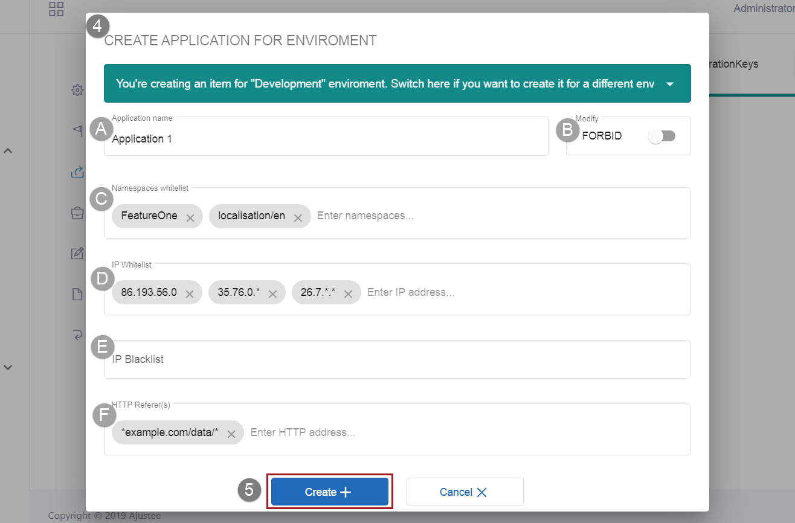
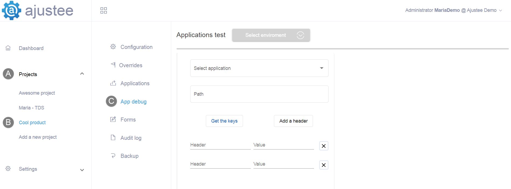
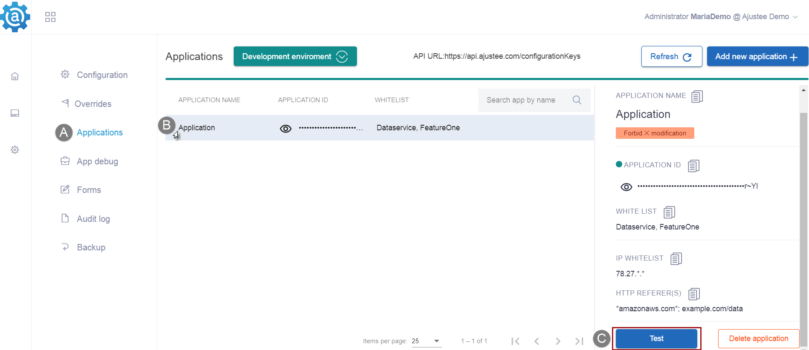
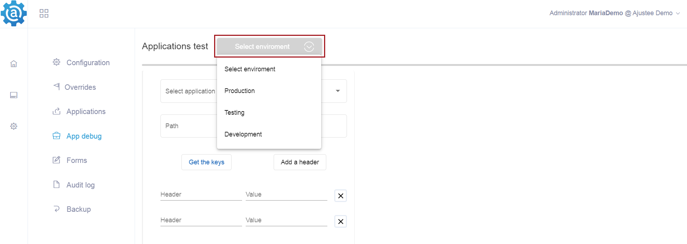
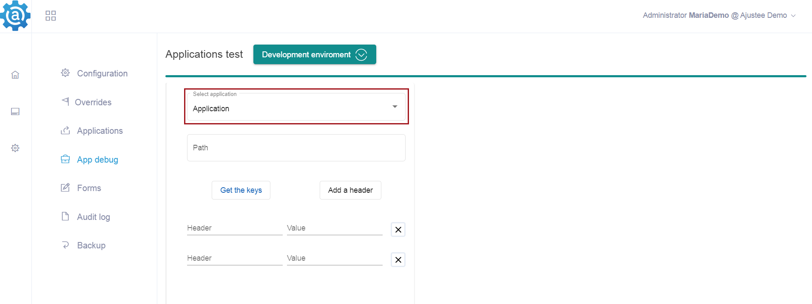
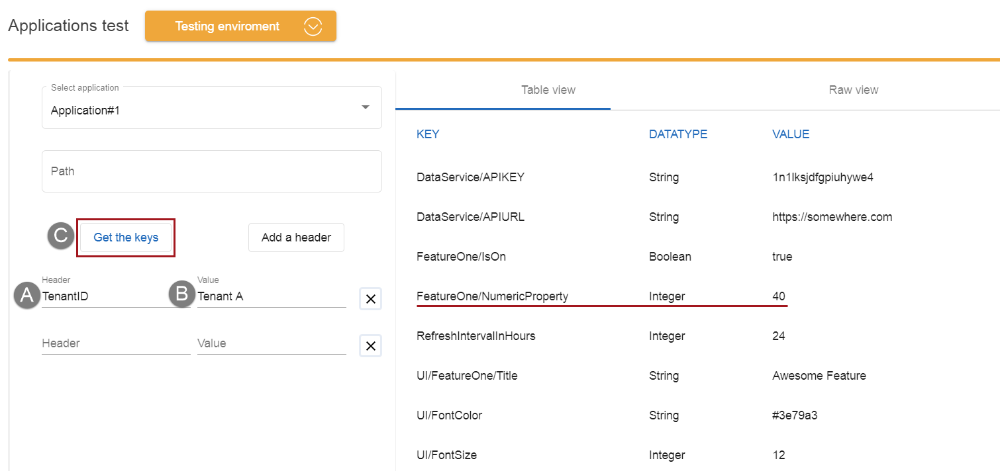
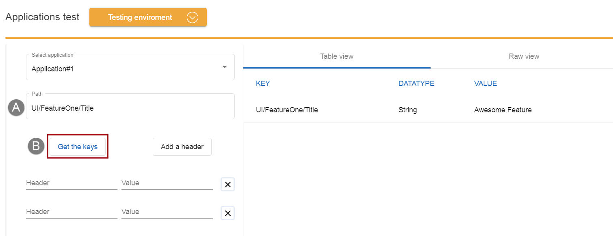
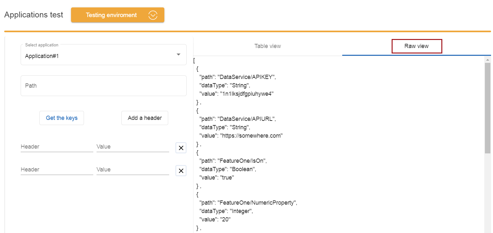
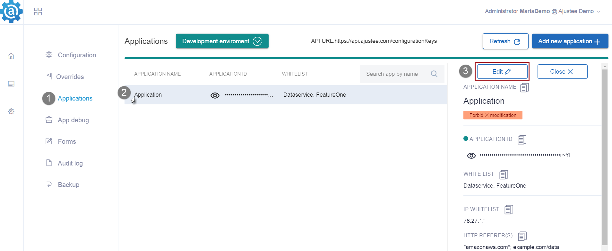
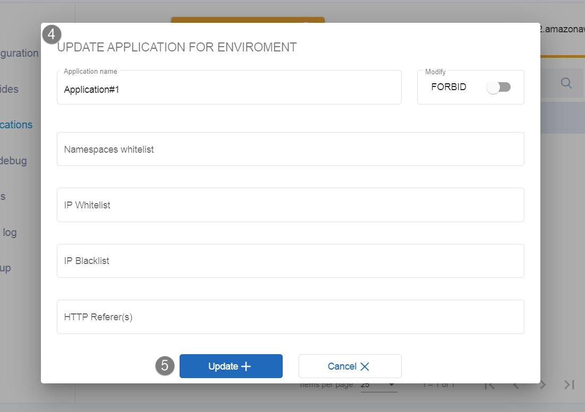

How to create
and test Application
in Ajustee
The article explains the concepts of application and whitelisting, clarifies their connection. Instruction shows how to create an Application, apply access restrictions, generate Application ID, and finally test the created app by getting a response via "App Debug" feature. Ones you've checked that REST API works well and what configuration key values the app can read, the update of application settings might be needed. The article provides guidance on editing and deleting apps.
IN THIS ARTICLE
- Application
- Whitelisting
- How to create Application & set Whitelists
- Viewing Application ID
- Testing Application ID and Whitelists via App Debug
- Editing Application
- Deleting Application
Rights: Admin and PowerUser can create, update, delete applications. App ID can be viewed by all roles.
Application
In Ajustee system Application entity represents programs that consume configuration keys values of your product. Apps mostly receive product configuration values via REST API or platform clients, though in some scenarios applications can send values back and modify them so. Examples of applications may be a microservice, a web client of your product, a SPA. If Google is a tenant, Gmail product is a project, then applications will be iOS app, Android app, Web client.
Note: In Ajustee, Application is always created within a certain environment of a project and belongs to this env. Thus one application can get access to the values of only one environment. Such separation ensures security and prevents the kind of cases when the test app reaches out to production data.
Whitelisting
Whitelisting is a security practice to limit and control access of an application to your data in Ajustee. The more applications you create, the more granular access to the key values you have. Whitelisting gets segmentation of access to configurations within the env even further.
For example, imagine you have a project with all the settings in place. You have client-side logic, server-side logic and a client-side SPA application that executes within the user browser. So any advanced user will be able to track an application ID to access the data. With whitelisting in place, you're able to filter application access only to SPA specific values so backend related settings a safe.
Application calls can be restricted by 4 settings:
- Namespaces whitelist narrows access to a particular set of keys instead of the entire project keys.
- IP address whitelist allows responses only to the requests from trusted IPs that were added to the list. Calls that come from another address get 403 Forbidden status code.
- IP address blacklist blocks provided addresses from obtaining and retrieving your data. Calls that come from these addresses get 403 Forbidden status code.
- HTTP referrers are approved URLs where REST API requests may come from, others will be ignored and receive 403 status.
How to create Application & set Whitelists

-
1. Open Application page
-
Click Projects in the left navigation menu. In the expanded list, select the project you need. Its sub-menu is now available. Choose the Applications tab. The grid might be empty at the beginning.
-
2. Select Environment
-
As every App belongs to only one env, first use Select environment filter and choose one instance from the dropdown list.
-
3. Click "Add new Application" button
-
Once the Environment is selected the button appears in the upper right corner of the Application page.
-
4. Fill in "Create application for environment" form
-
Name the App. Set permissions and optionally restrict application calls with white or blacklists.
 -
A. Give Application a name
-
It should be unique within an env, not less than 3 symbols. In this form, it is an only required box, enough to create the app with full access.
-
B. Allow or forbid the application to modify environment configuration key values
-
Modification setting is a way to control if an application can update existing environment keys values:
- Forbid status is the default. It means when an application tries to update values it gets 403 status code.
- Allow status supports a REST API method, so application can change the environment key value only. Apply it when the configuration values of your project are auto-generated by external tools or processes. For example, the SNS channel was generated by a pipeline and software needs to know how to reach it out.
-
C. Namespaces whitelist
-
Only subgroups of keys under the provided namespace will be available to this app. Listed namespaces can be several levels deep. For example, there is a project with the configurations "UI/Theme/Color", "UI/Theme/Font", "UI/FeatureOne/Enabled". Application with "UI/Theme" whitelist won't have access to the "UI/FeatureOne/Enabled" key and any other keys besides all keys within "UI/Theme" namespace.
-
Tip: Make sure namespaces in the whitelist are spelled exactly as in the Keypath names. The field is Case sensitive.
-
D. IP Whitelist
-
Only calls from the provided IPs will be responded to. Separate listed items with a comma or space. Possible formats:
- single IP. For example, 19.13.45.203, 10.0.0.56, etc.
- range of IPs. Replace the range segment of the address with the asterisk (*). For instance, 19.13.45.* is a valid IP address sequence from 19.13.45.0 to 19.13.45.255. Another example, 10.0.*.* is a range from 10.0.0.0 to 10.0.255.255.
-
E. IP Blacklist
-
Calls from addresses entered in this box won't be satisfied.
-
Separate listed items with a comma or space. Possible formats are the same as for IP whitelist.
-
F. HTTP referrers
-
Only requests from URLs you set in this box will be accepted.
-
Recommended format: Use the asterisk (*) to make a URL mask and ignore other URL parts in REST API requests. For example, *example.com/data* is a URL mask provided in the "HTTP referrers" box. It allows REST API calls from "https://test.example.com/data/contracts/234" and "https://www.example.com/data/awards/pell/2010?output=preview". But calls from "https://store.example.com/contracts/90" or "http://testorg.uri" get a 403 Forbidden status code.
-
5. Click "Update+" button down the form
The new Application has been created and now you can see it in the grid. The application creation record is made in the Audit log of the project and can be viewed in Audit history on Key details panel as well. The App ID has been generated.
Viewing Application ID
Find app ID to use it in your REST API and client's calls.
- Open Application page of the project.
- View the ID in the second column of the grid. Hold the left-click on the eye icon to see the sensitive data.
- To copy the ID click the application in the grid and get to the App details panel on the right. There is a copy icon.
Testing Application ID and Whitelists via App Debug
App Debug feature lets you make sure that all REST APIs of your applications in the project work as intended. It presents you with a friendly user interface to construct requests and read responses. You can create different requests to look at:
- all configuration values available to the app
- and specified override values
- or one particular kye value.
All restricting settings, such as Namespace and IP whitelists, IP blacklist, and HTTP referrers are included in App Debug testing. For example, if you use HTTP referrers and Ajustee URL is not in the list, the correct expected response to a test call is an Error.
-
1. Open App Debug page
-
There are two ways to access it:
- Either click Projects in the left navigation menu, select the project you need from the expanded list, choose the App Debug tab in the project submenu;

- Or click the app in the grid of the Application page to see the Key details panel on the right. A Test button is at the bottom of the panel. On the App Debug tab, environment and application are predefined for you, so skip steps 2 and 3.

- Either click Projects in the left navigation menu, select the project you need from the expanded list, choose the App Debug tab in the project submenu;
-
2. Choose environment
-
Use the " Select environment" filter on the top of the page.
 -
3. Specify application
-
Pick one from the dropdown list of available apps in this env.
 -
4. Specify what values should be requested in the test call click "Get the keys" button
-
It is possible to receive all configuration values available to the app, specified override values or one particular kye value.
- All configuration keys values
This is a default flow, no extra settings are necessary, just click the "Get the keys" button and receive the response on the right part of the screen.
Note: If the environment value is not specified for a key, the response will contain its default project value. If Namespace Whitelist restricts Application access, then a response will contain only key values from the list.
- Particular override values
Note: First, override should be created for the env, then override value should be assigned to the configuration key. Learn how to do it in the "Creating overrides" instruction. Once those steps are completed you can run the following test.
To get an override value, specify extra parameters for the request:
A. Header field requires the property assigned to the override when it was created.
B. Value field requires the string value assigned to the override when it was created.
C. Click the " Get the keys" button.
In the screenshot example, the response contains override value "40" for configuration "FeatureOne/Numeric property". It differs from the previous test screenshot with default request settings, where the test result shows environment or default values.
" Add a header" button allows you to make as many extra parameters for override values request as you need.
 - Particular configuration key value
If you need only one element in the response, fill in the Path field and click the "Get the keys" button.
The required format is the key path - all the namespaces and the name of the configuration. For example UI/FeatureOne/Title.
- All configuration keys values
-
5. View test results
-
There are two possible outcomes:
- Error response. Status codes are not provided via UI. Note: When your request does not fit such restrictions as IP whitelists or blacklist, and HTTP referrers, the correct expected result is an "error".
- Data response is displayed on the right part of the screen. There is not only UI Table view, but also Raw view in JSON format.

- Application name
- "Modify values" fearute setting
- Whitelist restrictions
- Open the Application tab of the Project.
- In the grid click the app you are about to edit.
- The
App details panel is displayed on the right with the
Edit button on the top.

-
"
Update
application for environment" form opens. Please refer to the guide
"Fill in Create application for environment form" above in this document for the details on editing the fields.

- Click the " Update+" button at the bottom of the pop-up to save the changes.
- Open Application tab of the Project.
- In the grid click the app you are about to edit.
- The App details panel is displayed on the right. Click the "Delete application" button in its downright corner. No confirmation is required.
Editing Application
With editing function, you can make changes in:
The record about the app editing is made in the Project Audit log.
Deleting Application
Once an application is deleted it is not displayed in the grid. The change is recorded in the Project Audit log.
Bulk items deletion is not available.